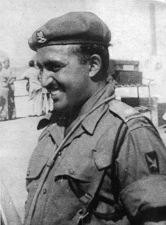

General Bipin Chandra Joshi
General Bipin Chandra Joshi (5 December 1935 – 19 November 1994) was the 17th Chief of Army Staff (COAS) of the Indian Army. He was born in
Pithoragarh, Uttarakhand. The Gen. B. C. Joshi Army Public School was established in 1993 in Pithoragarh, Uttarakhand in his honour.
Admiral Devendra Kumar Joshi
Admiral Devendra Kumar Joshi (Retd.),(born 4 July 1954) was the 21st Chief of Naval Staff of the Indian Navy, having assumed
office on 31 August 2012. He is a specialist in anti-submarine warfare. He resigned on 26 February 2014, taking responsibility for a series of accidents, thus becoming the first Indian Navy Chief to resign. He is currently the Lieutenant Governor of Andaman and Nicobar Islands.
Major Somnath Sharma

Major Somnath Sharma (31 January 1923 – 3 November 1947), an Indian Army officer, was the first recipient of Param Vir Chakra (PVC), India's highest military decoration. He fought in the Indo-Pakistani War of 1947. Sharma was killed on 3 November 1947 while evicting Pakistani infiltrators from Srinagar Airport, and was posthumously awarded the Param Vir Chakra for his actions prior to his death. Sharma completed his schooling at Sherwood College, Nainital,
before enrolling at the Prince of Wales Royal Military College in Dehradun. He later studied at the Royal Military College, Sandhurst.
General Bipin Rawat
General Bipin Rawat is the 27th Chief of Army Staff of the Indian Army. He assumed office on 31 December 2016 after retirement of
General Dalbir Singh. Bipin Rawat was born in Pauri Garhwal district, Uttarakhand, India. His family had been serving in the Indian Army for multiple generations, and his father was Lieutenant General Laxman Singh Rawat. Rawat attended Cambrian Hall School in Dehradun, St Edward’s School in Shimla, and the Indian Military Academy, Dehradun, where he was awarded the 'Sword of Honour'.
Jaswant Singh Rawat
Jaswant Singh Rawat(19 August 1941 - 17 November 1962) was an Indian rifleman soldier of 4 Garhwal Rifles, Uttarakhand who won the Maha Vir Chakra posthumously at the Battle of Nuranang in the present day Arunachal Pradesh during the 1962 India-China war. The 4 Garhwal Rifles was awarded battle honour Nuranang, the only battle honour awarded to any Army unit in the Sino-Indian war of 1962. He was born on 19 August, 1941 to Shri Guman Singh Rawat, at village Baryun, Pauri Garhwal district, Uttarakhand. The orders for the 4 Garhwal rifles were to retreat from their position but Rifleman Jaswant Singh, remained at his post and repulsed Chinese troops for three days from overrunning the post. According to the legend he killed more than 150 Chinese Soldiers in the battle and the Chinese were so angry with him that they cut off his head back to China. After the ceasefire impressed by the soldier’s bravery, the Chinese returned the head along with a brass bust of Jaswant Singh. The exemplary bravery shown by Jaswant Rawat was honored by building a memorial at the post where he fought the Chinese army. The post which he held against the Chinese Army was named as Jaswant Garh. Another honor bestowed upon him is that
he continues in the service even after death, he has been awarded promotions as if he is still serving the Nation. Local people around Tawang area believe that he has become a saint and his spirit protects the area. The Indian army keeps at least half-a-dozen personnel here to take care of Rawat as if he is alive. He is served bed tea at 4.30 am, breakfast at 9 am and dinner at 7pm. Jaswant Rawat has been elevated by locals to a Holy Baba, who keeps vigil over the area and protects the region. A shrine, a memorial has been made at the place where he fought and the place is fondly called as Jaswant Garh. All Indian
Army personnel passing by this route from General to a Jawan pay their respects here. Jaswant is treated as if he is alive, his boots shined, linen washed, towels changed. Soldiers who polish his shoes claim that they are often found covered with mud, a sign that he has been walking around at night. The Legend goes that convoys in blizzards have seen Jaswant directing the vehicles through the serpentine bends. He continues to receive his promotions on time even after his death. He even gets letters from people seeking his blessings and help in all types of problems.
Ajit Doval
Ajit Kumar Doval, IPS (Retd), (born 20 January 1945) is a former Indian intelligence and law enforcement officer, who, since 30 May 2014, is the
5th and current National Security Advisor to Prime Minister of India. He had previously served as the Director of the Intelligence Bureau in 2004–05, after spending a decade as the head of its operations wing. Doval was born in 1945 in Ghiri Banelsyun village in Pauri Garhwal in the erstwhile United Provinces, now in Uttarakhand. Doval's father was an officer in the Indian Army. Doval was the youngest police officer ever to get the Police Medal for meritorious service. He got it after six years in the police (the norm is at least 17 years' service). In 1988, Doval was awarded one of the highest gallantry awards, the Kirti Chakra, becoming the first police officer to receive a medal previously given only as a military honour.